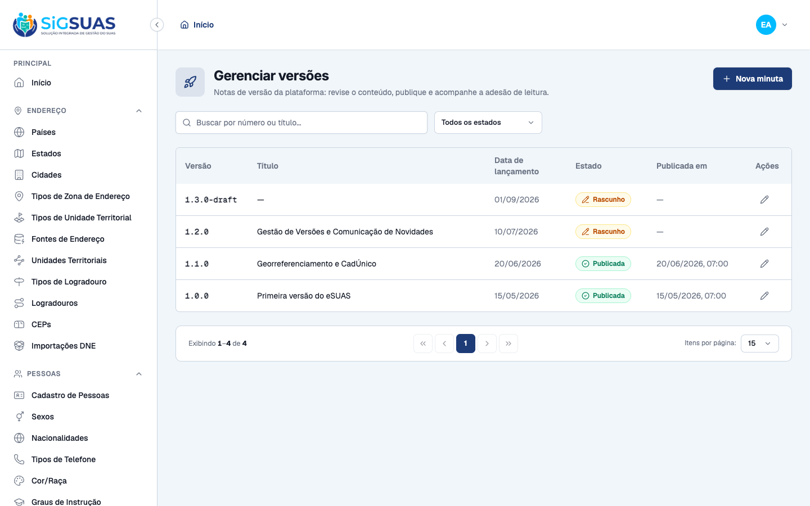
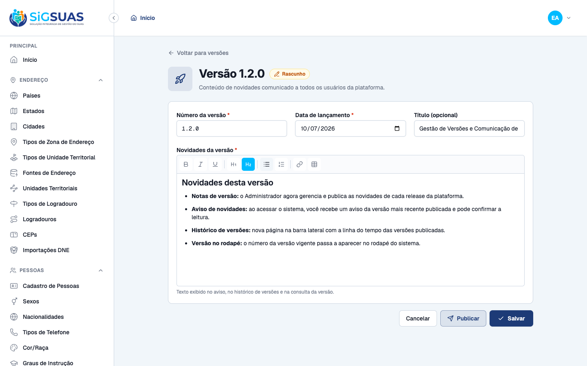
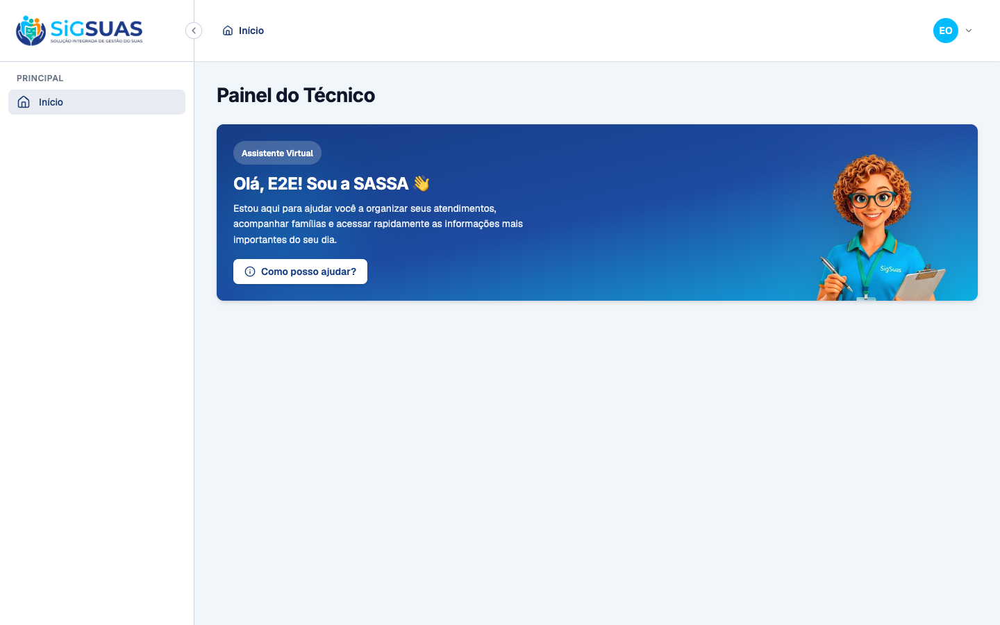
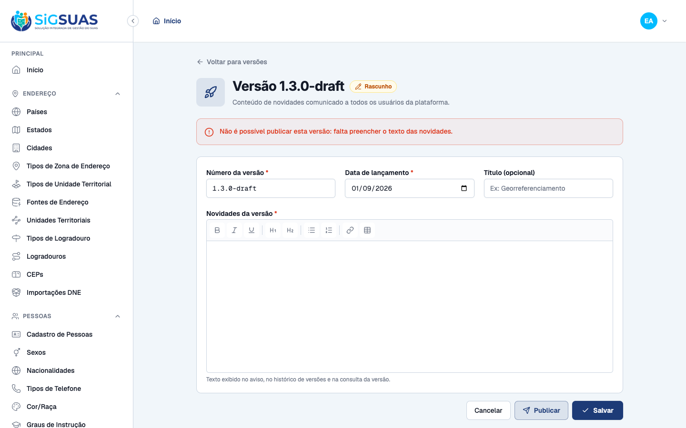
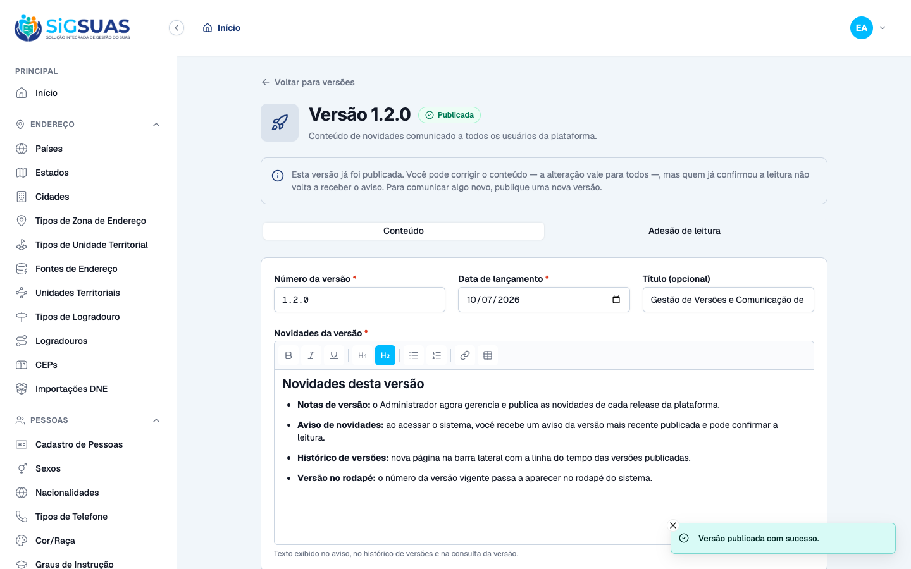
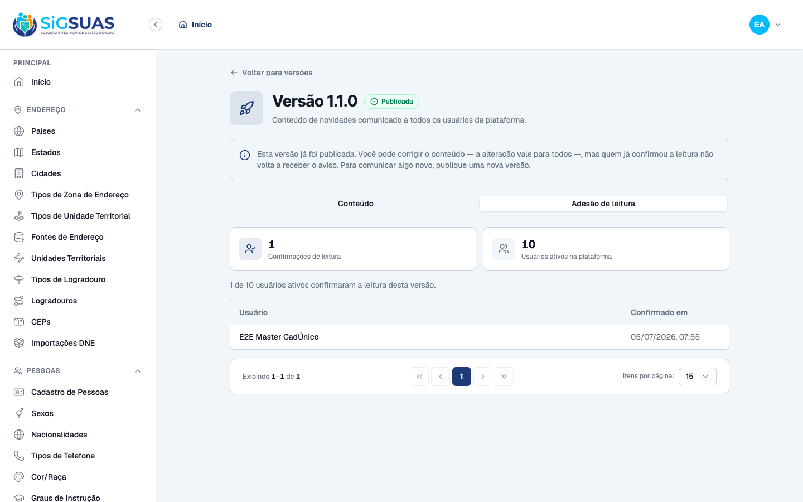
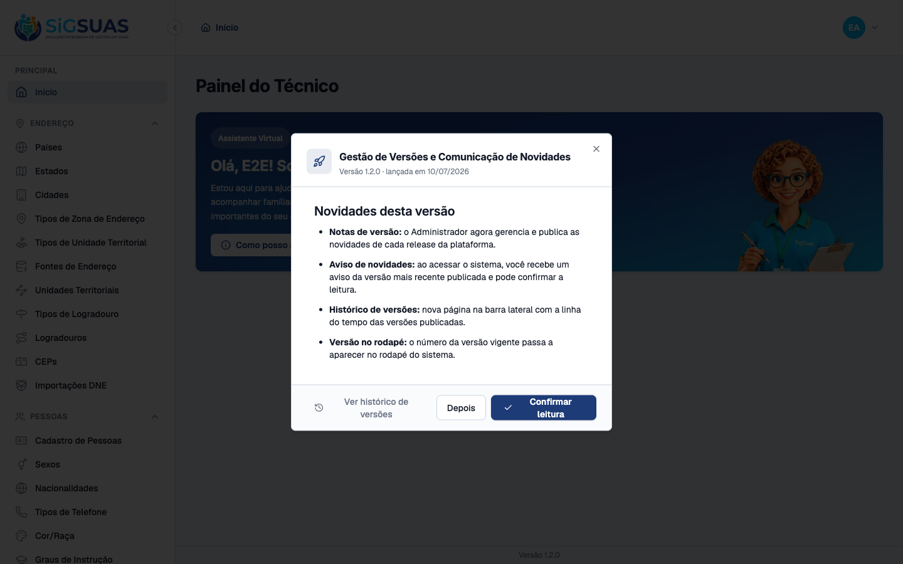
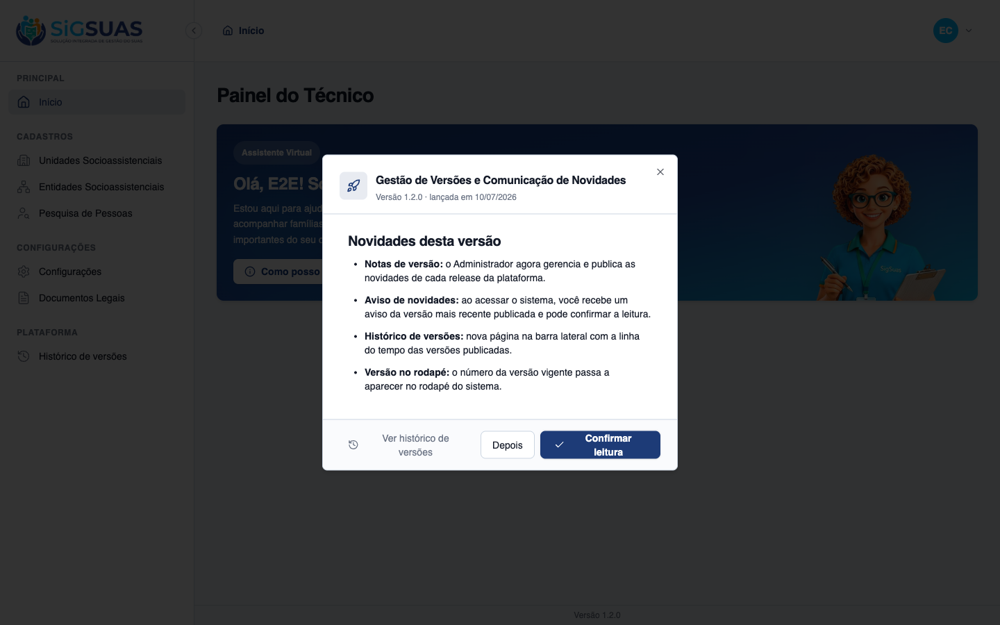
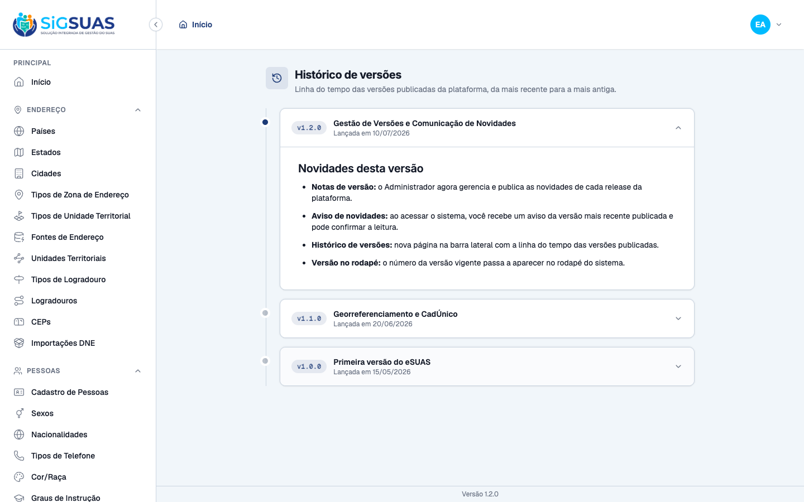
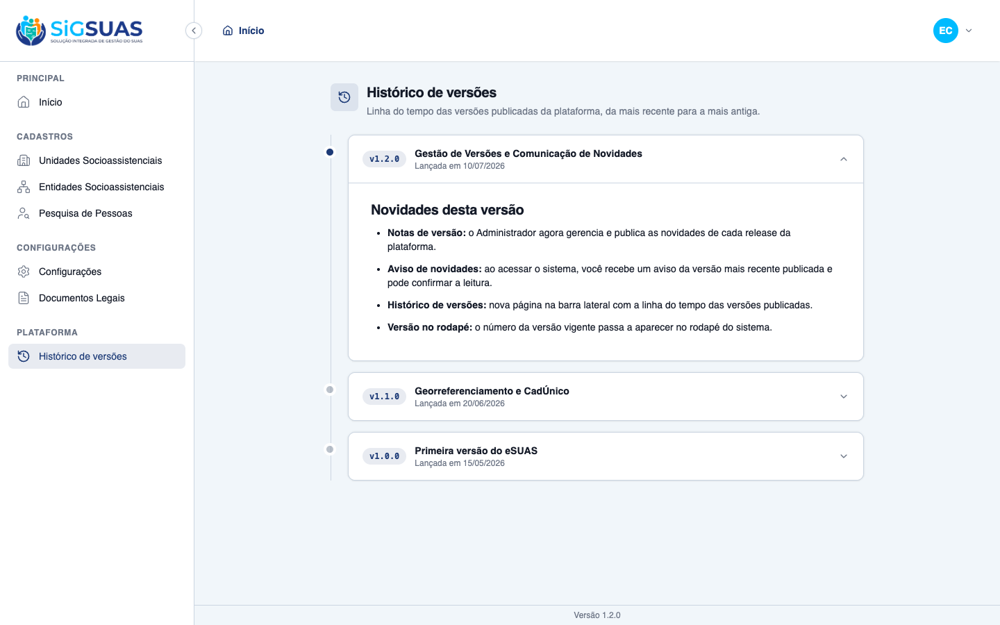

Relatório de Critérios de Aceite — Gerenciamento de Versões e Comunicação de Novidades da Plataforma
Resumo
Épico full-stack de 7 HUs e 13 RNs entregue em 3 etapas (backend api, gestão admin, consumo compartilhado nos dois frontends), com ciclo exec → review → correções → gates → evidências. 2 tabelas globais novas: platform_versions (modelo plano/editável — RN12 edita sem resetar leituras) e platform_version_reads (registro imutável, por usuário e global — sem tenant_id). Governança RN02: gestão restrita ao ADMIN (guard manager); ADMIN_OPERADOR e papéis client só consomem. Render de content_html sempre seguro (RichTextEditor/TipTap readonly, nunca v-html). Correções do ciclo de revisão: fechamento do vazamento de permissão do guard client (RN02) na Etapa 01. Resultado: todos os CAs atendidos. Gates: Pest 2574 passed (única falha MinioConnectivityTest pré-existente; 39 testes da feature) · admin ESLint 0/build ok/Vitest 1147 · client ESLint 0/build ok/Vitest 842.
| CA | Critério | Status |
|---|---|---|
| HU01-CA01 | Administrador lista versões com número, data e estado (rascunho/publicada) | ATENDIDO · navegador |
| HU01-CA02/CA03 | Editar novidades no editor de texto rico; rascunho de origem com conteúdo | ATENDIDO · navegador |
| HU01-CA04 | Master/operacional não acessam a gestão de versões (RN02) | ATENDIDO · navegador |
| HU02-CA02 | Publicação bloqueada sem conteúdo mínimo (RN05) | ATENDIDO · navegador |
| HU02-CA01/CA04 | Publicar versão completa; edição pós-publicação sem resetar leituras (RN12) | ATENDIDO · navegador |
| HU07-CA01/CA02 | Administrador acompanha a adesão de leitura por versão | ATENDIDO · navegador |
| HU03-CA01/CA02/CA04 | Aviso de novidades ao acessar (não-bloqueante), com atalho ao histórico | ATENDIDO · navegador |
| HU04-CA02 | Fechar sem confirmar → o aviso volta (RN08) | ATENDIDO · navegador |
| HU04-CA01/CA03 | Confirmar leitura → não reaparece; nova versão → volta a avisar | ATENDIDO · navegador + automatizado |
| HU05-CA01/CA02/CA03 | Histórico de versões na sidebar (todos os papéis, só publicadas) | ATENDIDO · navegador |
| HU06-CA01/CA02 | Número da versão vigente no rodapé dos dois ambientes | ATENDIDO · navegador |
| RN02/RN05/RN06/RN07/RN09/RN10/RN11 (backend) | Contrato de backend verificado por curls + Pest (apêndice) | ATENDIDO · navegador + automatizado |
HU01-CA01 — Administrador lista versões com número, data e estado (rascunho/publicada) ATENDIDO · navegador
Critério (Gherkin): Dado que sou Administrador no admin/, Quando acesso o gerenciamento de versões, Então vejo a lista com número, data, estado (rascunho|publicada) e abro cada uma para editar.
Como foi testado: Login ADMIN (manager 449…) → sidebar PLATAFORMA → Gerenciar versões → /app/platform-versions.
- Lista com Versão/Título/Data de lançamento/Estado/Publicada em: 1.3.0-draft e 1.2.0 (badge âmbar Rascunho), 1.1.0 e 1.0.0 (badge verde Publicada), ordem por data desc.
- Cada linha abre a edição (ação Editar).

HU01-CA02/CA03 — Editar novidades no editor de texto rico; rascunho de origem com conteúdo ATENDIDO · navegador
Critério (Gherkin): CA02: Dado que edito o texto no editor rico e salvo, Então o conteúdo é preservado com a formatação. CA03: Dado versão vinda do processo de desenvolvimento, Quando a vejo, Então está em rascunho com o conteúdo original disponível para revisão.
Como foi testado: Abrir a minuta 1.2.0 (Rascunho) → página dedicada de edição (form complexo → PAGE) com RichTextEditor, campos número/data/título e abas Conteúdo/Adesão.
- Editor rico exibe o conteúdo original formatado (H2, negrito, listas) da minuta em rascunho.
- Botões Salvar/Publicar; estado Rascunho no cabeçalho.

HU01-CA04 — Master/operacional não acessam a gestão de versões (RN02) ATENDIDO · navegador
Critério (Gherkin): Dado que sou Master ou usuário operacional, Quando navego, Então não tenho acesso a nenhuma função de gestão de versões.
Como foi testado: Logout → login ADMIN_OPERADOR (manager 123…) → conferir sidebar → acesso direto a /app/platform-versions.
- Sidebar do ADMIN_OPERADOR sem o grupo PLATAFORMA / item Gerenciar versões (gate por permissão platform-versions.index).
- Acesso direto à rota redireciona para /403 (gate real de rota, não só ocultação visual).
- Backend: ADMIN_OPERADOR recebe 403 em index/show/store/update/publish/reads (transcript curl no apêndice).


HU02-CA02 — Publicação bloqueada sem conteúdo mínimo (RN05) ATENDIDO · navegador
Critério (Gherkin): Dado rascunho sem texto (ou sem número/data), Quando tento publicar, Então é impedido (422) com indicação do que falta.
Como foi testado: Abrir a minuta 1.3.0-draft (sem novidades) → Publicar → confirmar no dialog.
- Alerta vermelho na própria página: "Não é possível publicar esta versão: falta preencher o texto das novidades." (chave errors.platform_version do backend).
- A versão continua em Rascunho — publicação impedida.

HU02-CA01/CA04 — Publicar versão completa; edição pós-publicação sem resetar leituras (RN12) ATENDIDO · navegador
Critério (Gherkin): CA01: Dado rascunho com número+data+texto, Quando publico, Então vira publicada e fica visível (aviso, histórico, rodapé). CA04: Dado versão publicada com texto corrigido, Quando um usuário consulta o histórico, Então vê o texto corrigido e quem já confirmou não volta a receber o aviso.
Como foi testado: Abrir a minuta 1.2.0 (completa) → Publicar → confirmar.
- Estado passa a Publicada; banner RN12: "Esta versão já foi publicada. Você pode corrigir o conteúdo — a alteração vale para todos —, mas quem já confirmou a leitura não volta a receber o aviso."
- Backend (apêndice): editar publicada não reseta leituras (platform_version_reads referencia a versão); confirmado por Pest.

HU07-CA01/CA02 — Administrador acompanha a adesão de leitura por versão ATENDIDO · navegador
Critério (Gherkin): CA01: Dado que sou Administrador, Quando consulto uma versão publicada, Então vejo quem confirmou e quando. CA02: Quando vejo o resumo, Então vejo total de confirmações vs total de usuários ativos.
Como foi testado: Na versão publicada 1.1.0 → aba Adesão de leitura.
- Cards: 1 Confirmações de leitura vs 10 Usuários ativos na plataforma; frase "1 de 10 usuários ativos confirmaram a leitura desta versão".
- Tabela quem/quando: "E2E Master CadÚnico — 05/07/2026, 07:55".
- Restrito ao ADMIN (permissão platform-versions.reads); PII full_name só nesta tela restrita.

HU03-CA01/CA02/CA04 — Aviso de novidades ao acessar (não-bloqueante), com atalho ao histórico ATENDIDO · navegador
Critério (Gherkin): CA01: Dado versão publicada não confirmada, Quando acesso, Então vejo aviso com número, data e resumo. CA02: Quando há várias, Então o aviso mostra só a mais recente e oferece atalho ao Histórico. CA04: Quando decido trabalhar, Então fecho e uso o sistema sem bloqueio (RN13).
Como foi testado: Login (admin manager e client operador) → o aviso da versão publicada mais recente não confirmada (1.2.0) aparece pós-autenticação.
- Dialog com título, "Versão 1.2.0 · lançada em 10/07/2026" e novidades formatadas (render seguro TipTap readonly — sem v-html).
- Botões: "Ver histórico de versões" (atalho HU03-CA02), "Depois" e "Confirmar leitura"; X para fechar (RN13 não-bloqueante).
- Idêntico nos dois ambientes (módulo de consumo byte-idêntico admin×client).


HU04-CA02 — Fechar sem confirmar → o aviso volta (RN08) ATENDIDO · navegador
Critério (Gherkin): Dado que fechei o aviso sem confirmar, Quando acesso novamente, Então o aviso volta a ser exibido.
Como foi testado: Client operador → aviso → botão Depois → recarregar a página (F5).
- Após "Depois" o dialog fecha; ao recarregar, o aviso REAPARECE.
- Nenhuma persistência de dispensa: zero chaves de version/update/dismiss no localStorage (RN08 = ausência de escrita).
HU04-CA01/CA03 — Confirmar leitura → não reaparece; nova versão → volta a avisar ATENDIDO · navegador + automatizado
Critério (Gherkin): CA01: Dado aviso exibido, Quando confirmo, Então fecha e não reaparece naquela versão, em nenhum acesso/dispositivo. CA03: Quando nova versão é publicada, Então volto a receber o aviso com o novo conteúdo.
Como foi testado: Client operador → aviso → Confirmar leitura → recarregar. Backend (apêndice): publicar 1.2.0 faz o aviso voltar a quem lera a 1.1.0.
- Após confirmar, o aviso some e NÃO reaparece ao recarregar; banco registra o operador (111…) lendo a 1.2.0.
- Confirmação é por usuário e global, sem tenant_id (P2) — provado por Pest cruzando guards (apêndice).
- CA03: transcript backend mostra current e latest-unread mudando ao publicar a 1.2.0 (aviso volta ao master que lera a 1.1.0).
Evidência por cobertura automatizada — ver Anexo.
HU05-CA01/CA02/CA03 — Histórico de versões na sidebar (todos os papéis, só publicadas) ATENDIDO · navegador
Critério (Gherkin): CA01: Dado qualquer papel/ambiente, Quando abro Histórico de versões, Então vejo a linha do tempo das publicadas (mais recente → mais antiga). CA02: Quando abro uma versão, Então vejo o conteúdo com formatação. CA03: Rascunhos não aparecem.
Como foi testado: Admin: sidebar PLATAFORMA → Histórico de versões (também via atalho do aviso). Client operador: sidebar Plataforma → Histórico de versões.
- Linha do tempo v1.2.0 → v1.1.0 → v1.0.0 (desc), item mais recente expandido com conteúdo formatado.
- Rascunhos (1.3.0-draft, e a 1.2.0 quando era rascunho) AUSENTES da lista.
- Acessível a TODOS os papéis SEM gate de permissão (RN10): operador (papel não-master) vê o item no client.


HU06-CA01/CA02 — Número da versão vigente no rodapé dos dois ambientes ATENDIDO · navegador
Critério (Gherkin): CA01: Dado autenticado em qualquer ambiente, Quando navego, Então o rodapé exibe o número da versão publicada mais recente. CA02: Dado nova versão publicada, Então o rodapé passa a exibir o novo número.
Como foi testado: Rodapé novo em AppLayout.vue (admin e client) consumindo GET platform-updates/current.
- Rodapé "Versão 1.2.0" visível no admin (dialog do aviso) e no client (página de histórico).
- Backend (apêndice): current muda de 1.1.0 → 1.2.0 ao publicar a 1.2.0 (HU06-CA02); rascunho nunca aparece (RN11).
RN02/RN05/RN06/RN07/RN09/RN10/RN11 (backend) — Contrato de backend verificado por curls + Pest (apêndice) ATENDIDO · navegador + automatizado
Critério (Gherkin): Regras verificadas diretamente na API: gating RN02 (403), aviso RN06 (latest-unread só a mais recente não lida; 204 quando lida), RN07 acknowledge idempotente (201→200), RN09 registro auditável, RN10 histórico só publicadas desc, RN11 rodapé (current).
Como foi testado: Transcript de curls autenticados (Sanctum cookie) no :8090 + suíte Pest da feature (39 testes / 182 asserções). Ver apêndice.
- RN02: ADMIN_OPERADOR → 403 em toda a gestão; guard client não recebe abilities de escrita (fix da revisão).
- RN06: admin (leu 1.0.0) → latest-unread = 1.1.0; master (leu 1.1.0) → 204; rascunhos ausentes de latest-unread/current/history.
- RN07: acknowledge 201 depois 200 (idempotente), acknowledged_at gravado no servidor; RN05: publicar sem conteúdo → 422 errors.platform_version.
- HU07: adesão confirmados=1 / total_ativos=10.
Evidência por cobertura automatizada — ver Anexo.
Anexo — Evidência de backend — transcript de curls (:8090) + suíte Pest da feature (39 testes / 182 asserções; suíte completa 2574 passed, única falha pré-existente MinioConnectivityTest)
==================================================================== EVIDÊNCIA BACKEND — Gestão de Versões da Plataforma (:8090 / esuas_e2e) api @ b2d5577 (sprint9-gestao-versoes) · 2026-07-05 Massa: 1.0.0 e 1.1.0 PUBLICADAS · 1.2.0 e 1.3.0-draft RASCUNHO Leituras iniciais: admin(4498…) leu 1.0.0 · master(5299…) leu 1.1.0 ==================================================================== ### RN02 (HU01-CA04) — ADMIN_OPERADOR (manager 1234…) bloqueado na gestão login[manager 12345678909] http=200 GET index -> <<http=403>> GET show -> <<http=403>> GET reads -> <<http=403>> POST publish -> <<http=403>> ### RN06/HU04-CA01 — MASTER (leu a 1.1.0 mais recente) NÃO recebe aviso (pré-publish) login[client 52998224725] http=200 latest-unread -> <<http=204>> history = ['1.1.0', '1.0.0'] ### RN06/RN10/RN11 — consumo do ADMIN (leu 1.0.0) login[manager 44983702016] http=200 latest-unread = 1.1.0 (published) current = 1.1.0 history = ['1.1.0', '1.0.0'] → 1.2.0 e 1.3.0-draft (rascunhos) AUSENTES dos três — RN04/CA HU02-CA03 ✔ ### HU07-CA01/CA02 — adesão da 1.1.0 (só ADMIN): quem confirmou + resumo confirmados=1 / total_ativos=10 leram: ['E2E Master CadÚnico'] ### RN05 (HU02-CA02) — publicar rascunho 1.3.0 SEM conteúdo → 422 errors.platform_version publish -> http 422 | chave: ['platform_version'] | Não é possível publicar esta versão: falta preencher o texto das novid ### RN07/RN09 — acknowledge idempotente (admin confirma a 1.1.0) 1ª confirmação -> <<http=201>> 2ª (idempotente) -> <<http=200>> admin latest-unread agora -> <<http=204>> (admin lera 1.0.0; após confirmar 1.1.0 e sem outra publicada → 204) ✔ ### HU06-CA02/HU04-CA03 — publicar 1.2.0 → rodapé muda e aviso volta ao master current(rodapé) agora = 1.2.0 login[client 52998224725] http=200 master latest-unread agora = 1.2.0 (published) (master lera a 1.1.0; nova 1.2.0 publicada → aviso volta) ✔ ==================== APÊNDICE PEST (suíte da feature) ==================== ✓ it does not overwrite published_at when re-publishing (RN05) 0.01s ✓ it lists the reads with user identification and adhesion summary (H… 0.01s ✓ it forbids every management action for an ADMIN_OPERADOR (RN02/HU01… 0.01s ✓ it rejects the client guard on the management routes (RN02) 0.01s ✓ it does not expose a destroy route for platform versions 0.01s PASS Tests\Feature\Console\SyncPermissionsTest ✓ it extracts the can: abilities declared by controllers from the rou… 0.03s ✓ it keeps full parity with the previous hardcoded permission set (no… 0.01s ✓ it seeds permissions for both guards and assigns them to roles 0.42s ✓ it runs permissions:sync idempotently without duplicating permissio… 0.72s ✓ it prunes orphan permissions not present in the registry 0.77s ✓ it does not write anything on --dry-run 0.03s ✓ it does not assign RESTRICTED_PERMISSIONS to any role 0.42s ✓ it permissions:sync --coverage fails when an authenticated route ha… 0.38s ✓ it never mirrors platform-versions write abilities into the client… 0.41s Tests: 39 passed (182 assertions) Duration: 4.02s